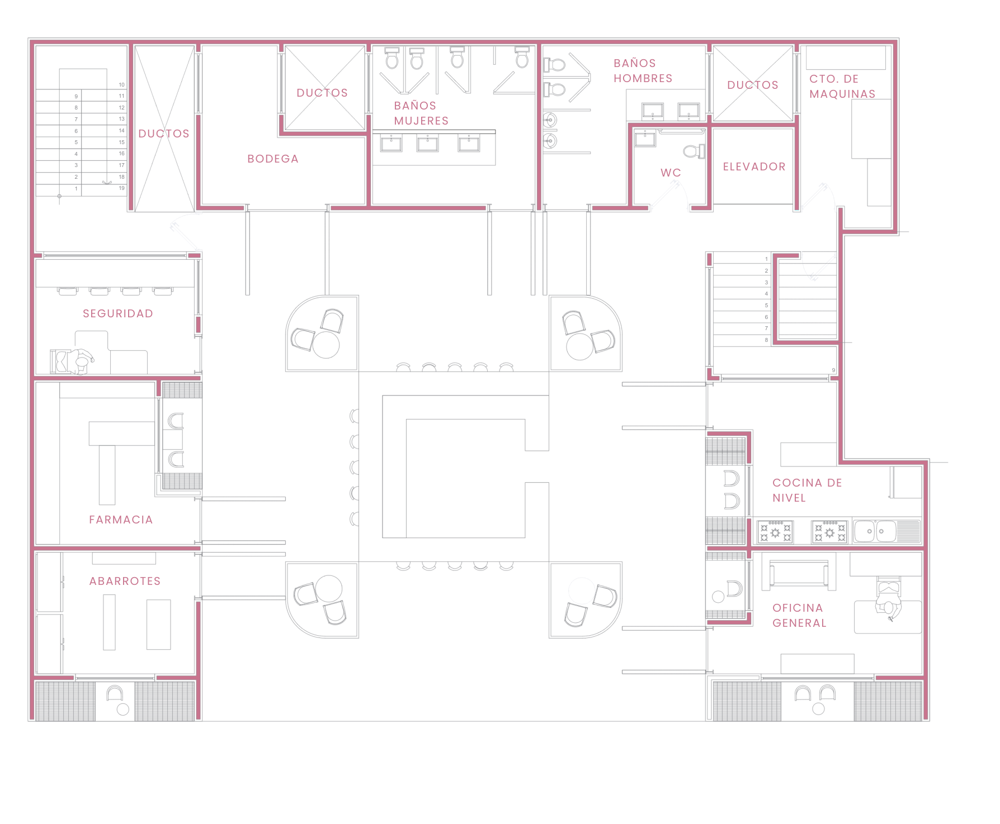
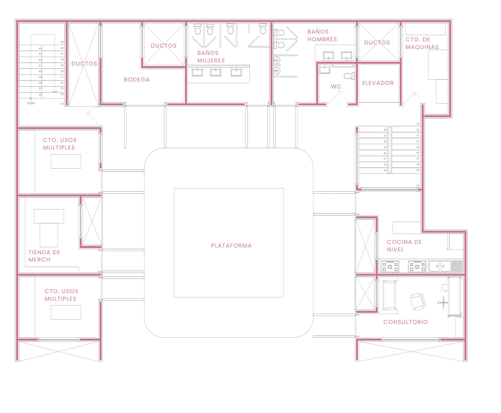
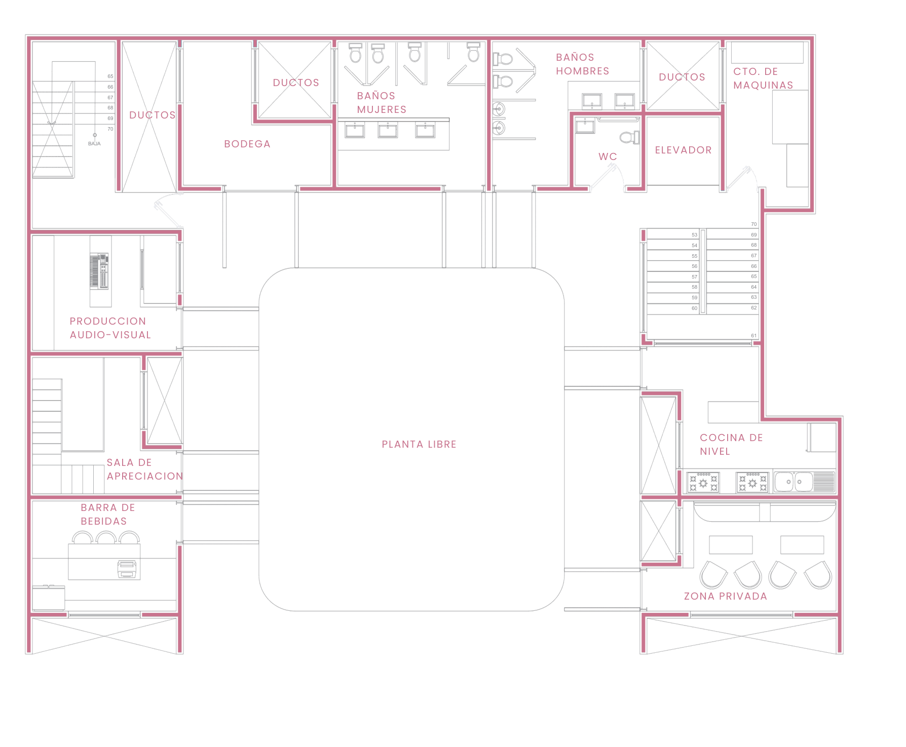
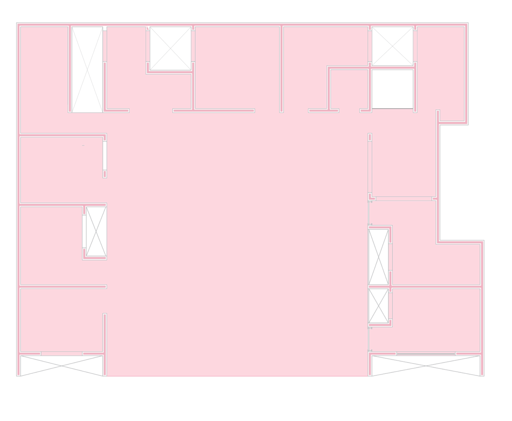
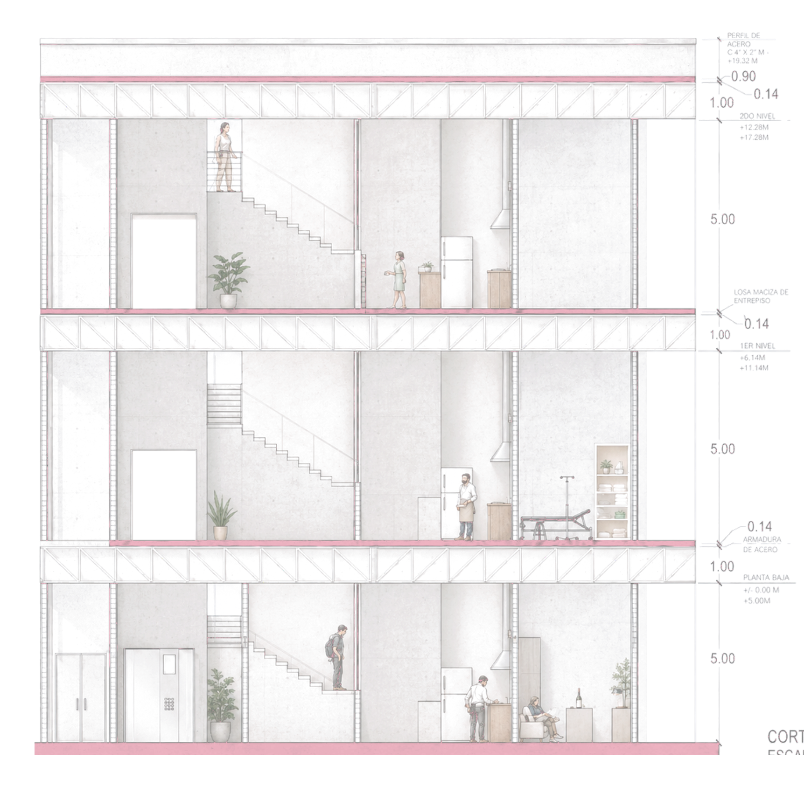

SPACE
& FORM.
EL
ARCHIVO.
La arquitectura se entiende mejor cuando también vemos lo que hay detrás de la imagen.
Este archivo comienza con THE EYE HUB: una investigación urbana y arquitectónica con estudio de contexto, diagramas, plantas y cortes. Haz clic en el render para explorar el dossier completo.
THE EYE
HUB.
De un bar de barrio a un espacio flexible para encontrarse.
Esta propuesta explora la transformación de RJ Bar, en Puebla, mediante una estructura que permite distintos programas a lo largo del día. El proyecto estudia la relación entre el edificio y la calle, el espacio público, la comunidad y la flexibilidad arquitectónica.
PLANTAS
(en capas).
Cuatro niveles de un mismo sistema: las áreas de servicio permanecen, mientras los espacios centrales y laterales se transforman. Los dibujos conservan sus líneas y anotaciones, ahora sin el fondo de papel del PDF.




CORTES
(del espacio).
Dos lecturas del proyecto en sección. Los niveles, la armadura y las circulaciones se explican a través de los cortes originales del dossier.


SKILLS.
Dibujo, modelo y representación. Las herramientas cambian; el criterio es lo que quiero seguir desarrollando.
DIBUJO Y MODELADO
AutoCAD / Rhino / SketchUp
REPRESENTACIÓN VISUAL
Photoshop / Illustrator
FORMA DE TRABAJAR
Exploración espacial / Desarrollo conceptual / Representación / Aprendizaje continuo
Primer esquema de herramientas y habilidades; pendiente de ampliar y verificar niveles de dominio antes de usarlo en postulaciones.